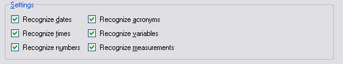

Creating a File-based Translation Memory
This chapter explains how to create a file-based translation memory programmatically, that is, an .sdltm file.
Add a New Class
Add a new class to your project named TmCreator. Then add a public method named CreateFileBasedTm().
The method takes a tmPath string parameter that specifies the path and file name of the translation memory to create. Call it as shown below:
var tmCreator = new TmCreator();
tmCreator.CreateFileBasedTm(_translationMemoryFilePath);
Inside the method, create the translation memory object as shown below:
public void CreateFileBasedTm(string tmPath)
{
var tm = new FileBasedTranslationMemory(
tmPath,
"This is a sample TM",
CultureInfo.GetCultureInfo("en-US"),
CultureInfo.GetCultureInfo("de-DE"),
this.GetFuzzyIndexes(),
this.GetRecognizers(),
TokenizerFlags.BreakOnDash | TokenizerFlags.BreakOnHyphen | TokenizerFlags.BreakOnApostrophe,
WordCountFlags.BreakOnTag | WordCountFlags.BreakOnHyphen | WordCountFlags.BreakOnApostrophe | WordCountFlags.BreakOnDash
);
tm.LanguageResourceBundles.Clear();
tm.Save();
}
When you create the translation memory object, provide these parameters:
- The full file name and path.
- The TM description string, which can also be empty.
- The source and target language. Use CultureInfo, which you create with GetCultureInfo. Pass the language locale as a string. To create a TM with the language direction English (US) -> German, use en-US and de-DE. An invalid locale string, such as en-DE, throws an exception.
- The fuzzy indexes to create for the TM. Specify whether to create and maintain a fuzzy index for the source segment, the target segment, or both. The fuzzy index is required for concordance searches, which let translators select words in a source or target segment and search for matching occurrences in the TM. A character-based concordance search can return more results because it is more tolerant. For example, a search for revolution might return revolving. A word-based search would not return that result because the words differ too much. Character-based searches are significantly slower than word-based searches, especially in large TMs, so use them only for small TMs with a few thousand segments. In most cases, users search both source and target languages. In this example, enable word- and character-based indexing for both segments. Use a helper function that returns all available FuzzyIndexes values, as shown below:
private FuzzyIndexes GetFuzzyIndexes()
{
return FuzzyIndexes.SourceCharacterBased |
FuzzyIndexes.SourceWordBased |
FuzzyIndexes.TargetCharacterBased |
FuzzyIndexes.TargetWordBased;
}
- The recognition settings identify elements that do not change during translation, such as numbers, dates, and acronyms. When you enable these settings, Studio marks those elements as placeables. Placeables can move directly from the source segment to the target segment without manual entry. When you create a TM in Trados Studio, Studio enables all recognition settings by default. In this example, a
GetRecognizershelper function returns all BuiltinRecognizers values and enables every recognition type.
private BuiltinRecognizers GetRecognizers()
{
return BuiltinRecognizers.RecognizeAcronyms |
BuiltinRecognizers.RecognizeDates |
BuiltinRecognizers.RecognizeNumbers |
BuiltinRecognizers.RecognizeTimes |
BuiltinRecognizers.RecognizeVariables |
BuiltinRecognizers.RecognizeMeasurements |
BuiltinRecognizers.RecognizeAlphaNumeric;
}
The screenshot below shows the TM recognition settings in Trados Studio:

Putting it All Together
The complete class should now look like this:
namespace SDK.LanguagePlatform.Samples.TmAutomation
{
using System.Globalization;
using Sdl.LanguagePlatform.Core.Tokenization;
using Sdl.LanguagePlatform.TranslationMemory;
using Sdl.LanguagePlatform.TranslationMemoryApi;
public class TmCreator
{
#region "create TM"
public void CreateFileBasedTm(string tmPath)
{
FileBasedTranslationMemory tm = new FileBasedTranslationMemory(
tmPath,
"This is a sample TM",
CultureInfo.GetCultureInfo("en-US"),
CultureInfo.GetCultureInfo("de-DE"),
this.GetFuzzyIndexes(),
this.GetRecognizers(),
TokenizerFlags.BreakOnDash | TokenizerFlags.BreakOnHyphen | TokenizerFlags.BreakOnApostrophe,
WordCountFlags.BreakOnTag | WordCountFlags.BreakOnHyphen | WordCountFlags.BreakOnApostrophe | WordCountFlags.BreakOnDash
);
tm.LanguageResourceBundles.Clear();
tm.Save();
}
#endregion
#region "get fuzzy indexes"
private FuzzyIndexes GetFuzzyIndexes()
{
return FuzzyIndexes.SourceCharacterBased |
FuzzyIndexes.SourceWordBased |
FuzzyIndexes.TargetCharacterBased |
FuzzyIndexes.TargetWordBased;
}
#endregion
#region "get recognizers"
private BuiltinRecognizers GetRecognizers()
{
return BuiltinRecognizers.RecognizeAcronyms |
BuiltinRecognizers.RecognizeDates |
BuiltinRecognizers.RecognizeNumbers |
BuiltinRecognizers.RecognizeTimes |
BuiltinRecognizers.RecognizeVariables |
BuiltinRecognizers.RecognizeMeasurements |
BuiltinRecognizers.RecognizeAlphaNumeric;
}
#endregion
}
}
See Also
Performing Translation Memory Lookups
Setting and Retrieving TM Properties
Setting Translation Memory Access Rights